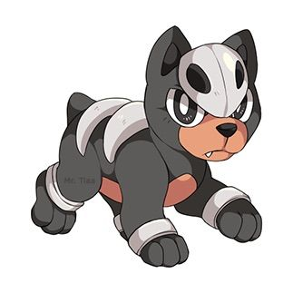

Pet information
Name
Hound
Weight
12 lb
70 / 100
65 / 100
Status: Normal
I'm ready to play.
Activity history
No activities yet.
How to play
Treats increase weight and happiness. Playing increases happiness and lowers weight. Exercise lowers weight and happiness. Playing and exercising use energy; resting restores it. Stats cannot go below zero. Happiness and energy stop at 100.
Progress saves automatically.